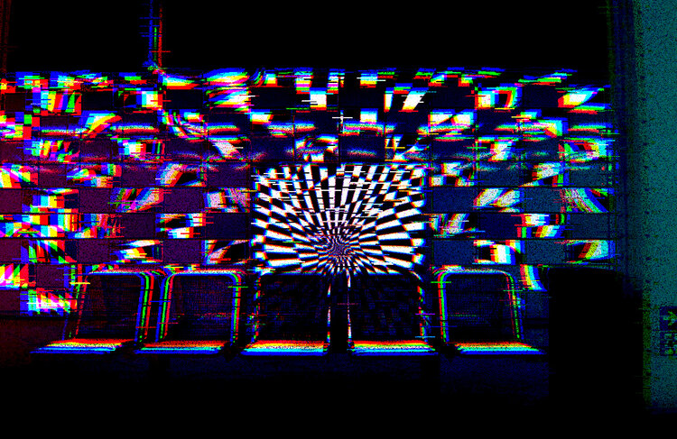

sixfeet
The height of the pandemic had everyone focusing on new york. A major concern being the subway system which 6 feet reflects. This series shows how a once piece of everyday transportation is now seen in a new light. A light of distrust and panic.
